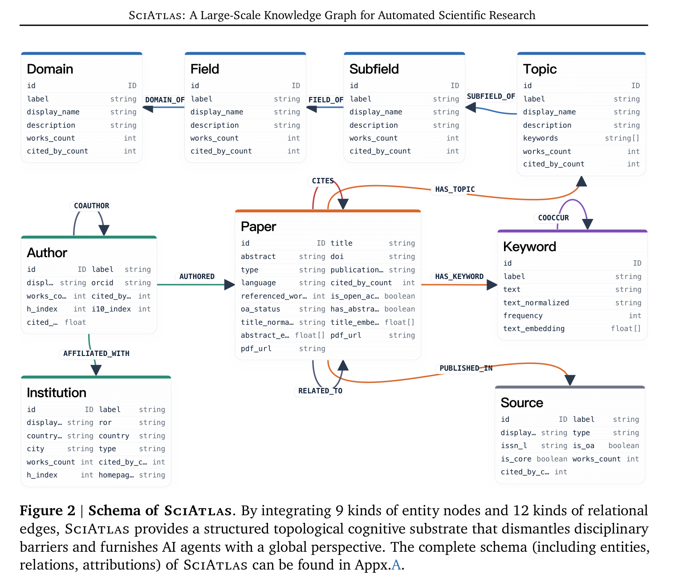
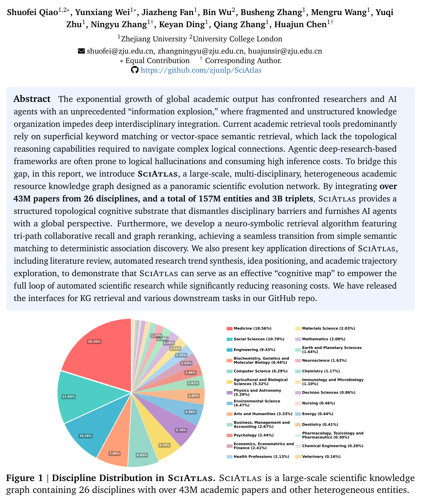
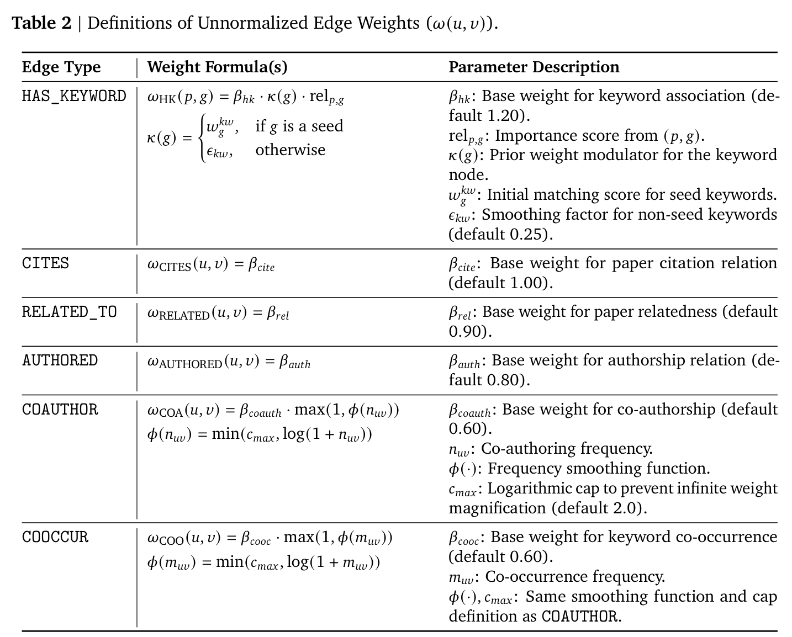

作者故意不去重
原文："we do not deduplicate authors due to the prevalence of name duplication and ambiguity"。109.70M 作者节点 + 2.06B 合著边全建在这个基础上 —— 而"相关作者检索""研究者背景综述"两个下游任务直接依赖它。
43.30M 论文 / 157M 实体 / 3B 关系的科研知识图谱 —— 工程规模是真的，科学性论证是缺的。
定位：简单档（有实质但贡献有限）。规模、schema、检索算法的细节都写得很具体，是真做了工程；但没有 baseline、没有指标、没有 benchmark、没有人工验证，六个下游应用全是单例截图。论文 §5 自己承认："we merely present running examples of downstream tasks, remaining at the qualitative analysis level."
对 AutoSci 而言这篇比 DeepXiv 更值得关注 —— 它是"KG 优先"路线对"deep research agent"路线的公开开火，而 AutoSci 的 SciDAG/SciMem 正站在被开火的那一侧。
这篇的立论方式是：结构化认知地图 vs 迭代搜索。它把 deep research agent 整类当作靶子。
Intro："Some deep-research-based agentic frameworks attempt to compensate for the deficiency of structured information through iterative knowledge search and integration [wispaper, deepxiv, alphaxiv, opensholar]."
紧接一句（§6.2 Related Work 处逐字重复）："However, this approach not only incurs high computational costs and response latency but also, due to the absence of deterministic cognitive maps as anchors for LLMs, renders them highly susceptible to logical hallucinations within complex exploratory trajectories."
DeepXiv 在这篇里就是这样被引用的 —— 两次，都是裸 \citep，都在这句批评里，不是数据源、不是对比系统、不在 pipeline 里。
唯一被正面交手的系统是 OmniScientist（arXiv:2511.16931）：
"However, it lacks the integration of core keywords for paper interconnection and semantic vectors. Furthermore, its Elasticsearch-based search algorithm merely relies on simple propagation through citation and reference relationships, without performing structured traversal and deep topological reasoning over heterogeneous subgraphs."
要设防的是这句批评本身。"成本高、延迟高、缺确定性锚点导致幻觉"是对 agentic 文献路线的标准质疑，会出现在审稿意见里。但注意：它这句话没有任何实验支撑 —— 全文唯一的性能类陈述是"The entire retrieval process can be completed within 2 minutes, significantly shorter than LLM-based deep research frameworks"，是断言，没有对照实验。

| 实体（总 157M） | 数量 | 关系（总 3B） | 数量 |
|---|---|---|---|
| Author | 109.70M | COAUTHOR | 2.06B |
| Paper | 43.30M | CITES | 213.88M |
| Keyword | 3.76M | AFFILIATED_WITH | 195.94M |
| Topic | 4.52K | AUTHORED | 149.00M |
| Source | 0.28M | HAS_TOPIC | 105.89M |
| Institution | 0.12M | HAS_KEYWORD | 101.38M |
| Subfield / Field / Domain | 252 / 26 / 4 | RELATED_TO / COOCCUR / PUBLISH_IN | 68.38M / 60.37M / 40.90M |

"The primary data source for our knowledge graph is from OpenAlex, a fully open-source library of scholarly resources encompassing over 480 million academic publications."
摄入的全貌就是这一句：OpenAlex 批量数据 + 每日 API + 两月一次 changefile。GROBID 只是"论文缺失的罕见情况"下的 PDF 元数据兜底。arXiv / ChemRxiv / PubMed / Google Scholar / Semantic Scholar 只在 §6.2 作为"人类科学家会去搜的地方"出现，不是数据源。无 Crossref、无 Unpaywall、无 S2ORC。存储用 Neo4j。
重要问题：480M → 43.30M，砍掉约 91%，论文从未量化或解释。你只能从两个数字自己推。合理推断 主因大概是过滤规则里那条"丢弃缺少关键属性（e.g. paper PDF URLs）的实体"—— 即要求开放获取 PDF。
而且43.30M 篇论文的时间跨度全程未给：没有起止年份，没有快照日期，没有 dump 版本号。对一个要做"研究趋势预测"下游任务的图谱，这是硬缺陷。
relevance_score）。明确拒绝了 OpenAlex 自带的 Concept："excessively sparse (only 65K entries…)" 且 "macroscopic and superficial (e.g., 'artificial intelligence')"。Prompt 刻意压制品牌名（好例："protein structure prediction"；坏例："AlphaEvolve"）。bge-reranker-large。原文："we do not deduplicate authors due to the prevalence of name duplication and ambiguity"。109.70M 作者节点 + 2.06B 合著边全建在这个基础上 —— 而"相关作者检索""研究者背景综述"两个下游任务直接依赖它。
关键词抽取、过滤、归一，全文没有任何 precision / recall / accuracy / 人工验证 / 标注者一致性。质量保证完全停在 prompt 层面。
§2.1 正文说 11 类关系，摘要/图/结论/Table 4 都说 12；Table 1 的 caption 和整个 §2.3 还叫 SciMap（源文件就是 scimap.tex）；还有一行写成 SUBFILED_OF。
§3 是全文最有实质的一节。三路召回 → 节点合并 → 2 跳子图 → 带重启随机游走 → 打分取 top-20。参数给得很全，可复现性上是加分项。

合理推断 下游六个应用（文献综述、想法接地、想法评估、想法生成、趋势预测、相关作者检索、研究者背景）本质上都是同一套检索的旋钮调法：想法生成放松 gp、趋势预测提高引用权重、作者检索把 Eq.16 换到 Author 节点。这算诚实的工程复用，但不构成六个独立贡献。
没有 baseline、没有指标、没有结果表。论文里的六张表分别是：Table 1 统计量、Table 2 边权超参、Table 3–6 Neo4j schema/索引。§4 的六个应用各是一段旋钮配方 + 一个 LLM 输出截图（4.1 文献综述和 4.5 相关作者检索连例子都没有）。§4 里没有点名任何一个 LLM，只说 "an LLM"。
几个例子的内容：想法接地用 InnoEval 对上一篇发散思维论文；想法生成从 "Knowledge Editing" 查询产出"联邦隐私保护知识编辑"；趋势叙事把脉冲神经网络分成 2006–2014 / 2015–2019 / 2020–2022 / 2023–2025 四段；研究者画像是一份匿名档案（透明地就是 Ningyu Zhang 的轨迹）。
可用性要看清：摘要原话是 "We have released the interfaces for KG retrieval and various downstream tasks in our GitHub repo" —— 是接口，不是数据。图谱不可下载：没有 Neo4j dump、没有 HuggingFace 数据集、没有数据许可。实际是一个 pip 客户端 + CLI，打到托管 API sciatlas.openkg.cn，需邮箱注册换个人 token，带用量统计（/v1/auth/usage）。构建代码是"We will open"（将来时）。
成本/延迟/幻觉三项批评没有一个有实验；"2 分钟内完成"是断言无对照。要回应这类质疑时，这是最直接的不对称：它没有资格用未验证的断言去否定一整条路线。
"确定性认知地图"的确定性建立在ID 匹配 + 不做作者消歧之上，且外部无法核验（不可下载）。所谓"确定性"是可用性上的确定，不是正确性上的确定。
三路召回 + 关键词权重高于引用 + RWR + 门控打分，参数完整。如果 AutoSci 要做文献子图检索，这是现成的强 baseline 设计。
CS 只占 6.29%，Medicine 18.56% —— 与 ScholarQuest（CS-only）、AstaBench（偏 CS）形成互补。契合"KernelMaster / AutoSci 必须跨领域泛化"的取向。
证据等级说明。本页基于 arXiv HTML v1 全文 及 LaTeX 源码 —— 后者是必需的，因为该论文的 arXiv HTML 渲染参考文献列表为空（LaTeXML 未能输出 bibitem），只有源码能解出 \citep 的 bib key，从而确认 DeepXiv 被引用的确切位置。审计发现 项为逐句核对后的缺失/矛盾认定；合理推断 项论文未言明。
归档日期：2026-08-03 · 论文版本 v1（2026-05-20，comments 为 "Ongoing Work"）· 图片由本地 PDF 按图注区域裁切。